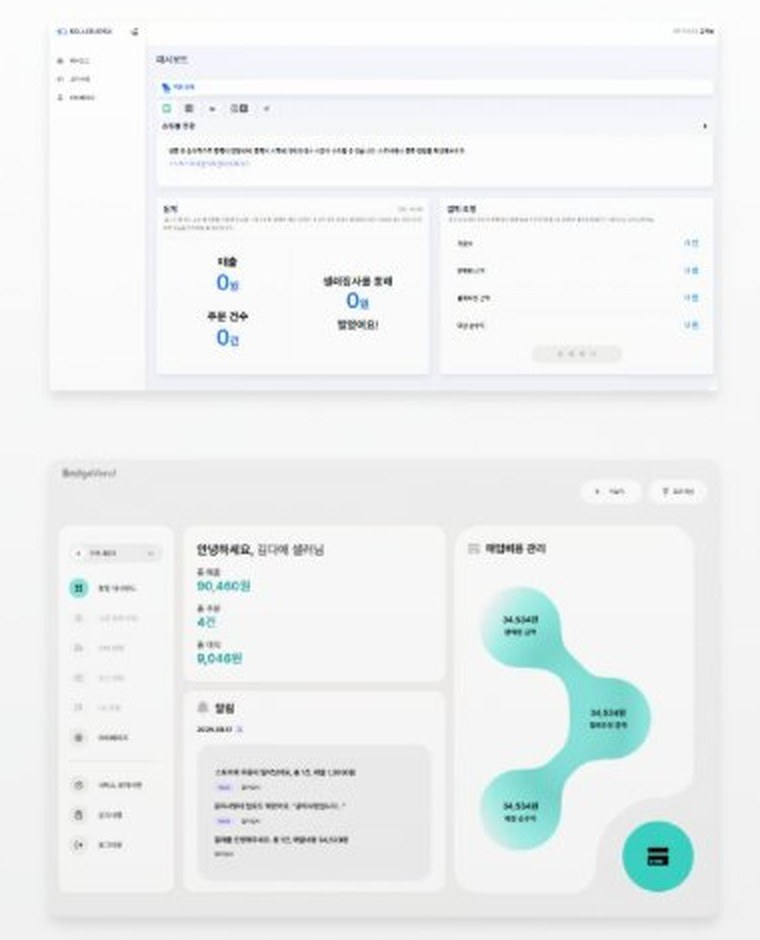
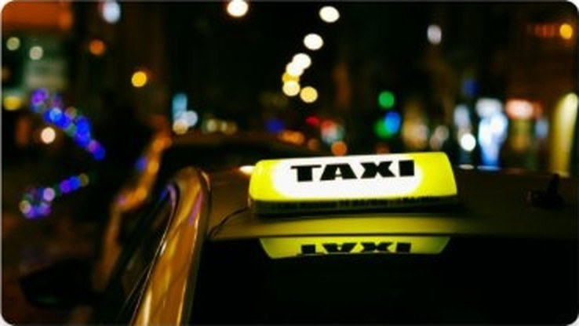
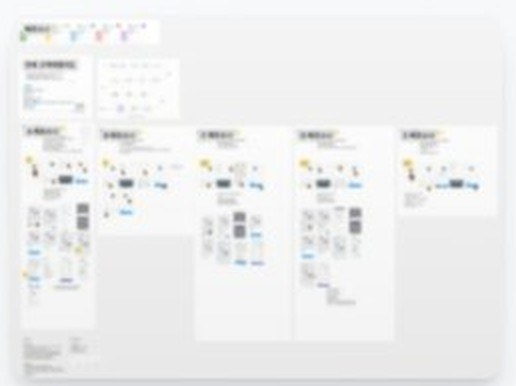
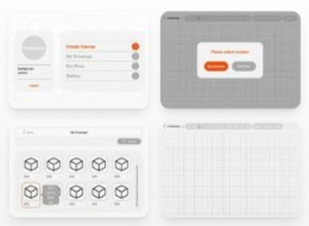
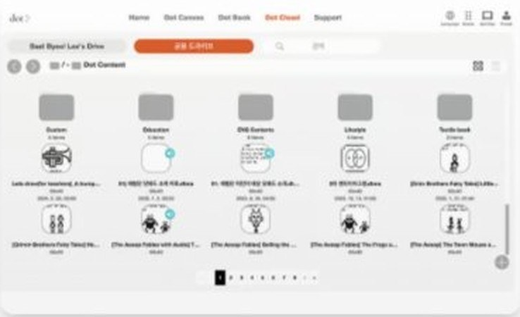
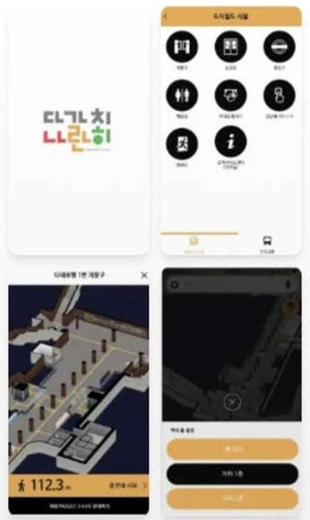
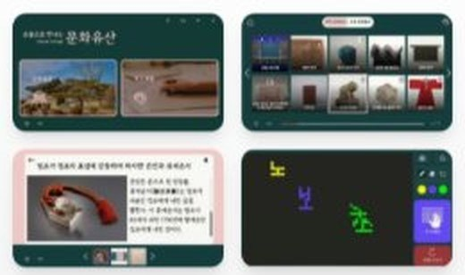

Featured Case — 콘텐츠 PD
선한목자병원 · 2026.06 – 2026.08 · 3개월
이창우TV
PD · Director
정형외과·스포츠의학 유튜브 채널 이창우TV에서 PD로 일하며, 영상 한 편이 업로드되기까지의 전 과정을 맡았습니다.
맡은 과정
- 01기획
- 02촬영
- 03편집
- 04썸네일
- 05업로드
성과
6만
채널 구독자
4.5만
숏츠 조회수
2.1만
롱폼 조회수
접근성 앱과 키오스크, 서비스 기획, 이커머스, 그리고 영상까지. 실무에서 직접 맡았던 작업들입니다.
개인 작품 1 · 실무 프로젝트 7 · 영상 5
05 Films
PD · Director
정형외과·스포츠의학 유튜브 채널 이창우TV에서 PD로 일하며, 영상 한 편이 업로드되기까지의 전 과정을 맡았습니다.
맡은 과정
성과
6만
채널 구독자
4.5만
숏츠 조회수
2.1만
롱폼 조회수

주식회사 고퍼소프트 · 2025
구매 전환율 향상을 목표로 한 이커머스 플랫폼의 전면적인 리디자인 프로젝트입니다. 사용자 여정을 분석하고 최적화하여 비즈니스 목표를 달성했습니다.
Duration
4주
Team
주식회사 고퍼소프트
Role
Senior UI/UX Designer
Challenge
기존 시스템의 복잡한 구조와 낮은 전환율 문제를 해결하면서도 기존 사용자들의 사용 패턴을 크게 방해하지 않는 개선방안이 필요했습니다.
Solution
A/B 테스트와 사용자 행동 분석을 통해 단계별로 개선사항을 적용했습니다. 체크아웃 프로세스를 단순화하고, 상품 발견성을 높이는 검색 및 필터링 시스템을 구축했습니다.

주식회사 로드시스템 · 2024
자사 Trip.Pass 앱과 IM 택시 서비스 간의 성공적인 결합 및 연동을 위한 서비스 기획 총괄 프로젝트입니다. 사용자 경험 최적화와 서비스 경쟁력 강화를 목표로 진행되었습니다.
Duration
3주
Team
주식회사 로드시스템
Role
Service Planning Lead
Challenge
Trip.Pass 앱과 IM 택시 서비스라는 서로 다른 플랫폼 간의 연동에서 일관된 사용자 경험을 제공하면서도 각 서비스의 특성을 유지하는 것이 가장 큰 과제였습니다.
Solution
사용자 리서치를 통해 핵심 터치포인트를 식별하고, 단계적 연동 방식을 통해 사용자가 자연스럽게 두 서비스를 이용할 수 있도록 설계했습니다. FIGMA 프로토타이핑으로 실제 구현 전 사용성을 검증했습니다.

주식회사 로드시스템 · 2024
택시 기사들의 업무 효율성을 높이기 위한 IM 택시 호출 서비스의 기사용 백엔드 시스템을 기획했습니다. 실제 택시 이용 경험과 기사 인터뷰를 바탕으로 현장 중심적인 서비스 요구사항을 도출하고 단순하면서도 효과적인 시스템 구조를 설계했습니다.
Duration
2주
Team
주식회사 로드시스템
Role
Backend Planning Lead
Challenge
운전 중인 택시 기사들이 안전하면서도 효율적으로 사용할 수 있는 백엔드 시스템을 설계하는 것이 가장 큰 과제였습니다. 복잡한 기능을 단순화하면서도 필요한 모든 정보를 제공해야 했습니다.
Solution
현장 리서치를 통해 실제 택시 기사들의 업무 패턴을 파악하고, 핵심 기능만을 선별하여 직관적인 시스템을 구축했습니다. 단순한 정보 구조와 명확한 사용자 흐름으로 안전성과 효율성을 동시에 확보했습니다.

주식회사 닷 · 2023
사용자 중심의 디자인 사고를 바탕으로 직관적이고 강력한 드로잉 경험을 제공하는 모바일 앱을 설계했습니다. 복잡한 드로잉 도구들을 누구나 쉽게 사용할 수 있도록 인터페이스를 개선했습니다.
Duration
3주
Team
주식회사 닷
Role
Lead UI/UX Designer
Challenge
복잡한 드로잉 도구들을 직관적이고 접근하기 쉬운 인터페이스로 구현하는 것이 가장 큰 과제였습니다. 다양한 사용자 레벨에 맞는 기능 제공과 동시에 단순함을 유지해야 했습니다.
Solution
사용자 조사를 통해 핵심 기능을 식별하고, 계층적 정보 구조를 통해 단순하면서도 강력한 UI를 구현했습니다. 적응형 인터페이스를 도입하여 초보자와 전문가 모두가 만족할 수 있는 경험을 제공했습니다.

주식회사 닷 · 2023
시각장애인 사용자의 디지털 파일 관리 경험을 개선하기 위한 백엔드 시스템을 기획했습니다. 드로잉앱과 다양한 프로그램에서 생성된 파일을 효율적으로 보관하고 정리할 수 있는 접근성 중심의 서비스 아키텍처를 설계했습니다.
Duration
2주
Team
주식회사 닷
Role
Backend Planning Lead
Challenge
시각장애인 사용자의 복잡한 일 관리 니즈를 충족하면서도 기술적 제약 사항 고려한 효율적인 백엔드 시스템을 설계하는 것이 가장 큰 과제였습니다.
Solution
사용자 중심의 기획 프로세스를 통해 접근성을 최우선으로 고려한 시스템 아키텍처를 설계하고, 단계적 개발 로드맵을 통해 핵심 기능부터 순차적으로 구현할 수 있도록 했습니다.

주식회사 닷 · 2022
크리에이터들이 언제 어디서나 포트폴리오를 관리하고 공유할 수 있는 모바일 애플리케이션을 디자인했습니다. 직관적인 콘텐츠 관리와 아름다운 프레젠테이션을 결합했습니다.
Duration
3주
Team
주식회사 닷
Role
UI/UX Designer
Challenge
다양한 형태의 크리에이티브 작품들을 하나의 앱에서 효과적으로 전시하고 관리할 수 있는 통합된 힘을 제공하는 것이 도전이었습니다.
Solution
모듈식 레이아웃 시스템을 구축하여 텍스트, 이미지, 영상 등 다양한 콘텐츠 타입을 유연하게 배치할 수 있게 했습니다. 드래그 앤 드롭 인터페이스로 직관적인 편집 경험을 제공했습니다.

주식회사 닷 · 2021
박물관 방문객들에게 보다 풍부하고 인터랙티브한 관람 경험을 제공하는 키오스크 시스템을 디자인했습니다. 다양한 연령층의 사용자를 고려한 직관적이고 접근성 높은 인터페이스를 구현했습니다.
Duration
2주반
Team
주식회사 닷
Role
Lead UI/UX Designer
Challenge
다양한 연령층과 기술 숙련도를 가진 박물관 방문객들이 모두 쉽게 사용할 수 있는 인터페이스를 설계하는 것이 가장 큰 도전이었습니다. 또한 문화적 맥락을 존중하면서도 현대적인 디자인을 적용해야 했습니다.
Solution
사용자 리서치를 통해 주요 사용자 그룹을 파악하고, 각 그룹의 니즈에 맞는 인터페이스 옵션을 제공했습니다. 큰 터치 버튼, 명확한 시각적 피드백, 다국어 지원 등을 통해 포용적인 디자인을 구현했습니다.